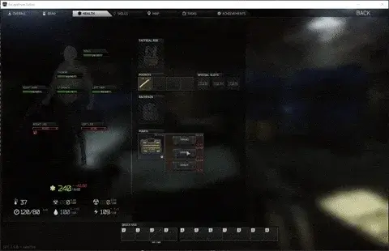

Make Meds Great Again!
- Downloads
- 21,348
- Favourites
- 19
- Mod lists
- 82
Mods on Hiatus / Support Paused
- Status: No updates planned due to focus on other projects.
- Open Invitation: The community has full permission to update, modify, and redistribute these mods. Feel free to fork the repository and build your own version.
Requires WTT-CommonLib
Make Meds Great Again! is a mod that lets your PMC move while performing surgeries, so you’re not a sitting duck every time you patch up. It also allows you to sprint while healing. Customize HP values for medkits, as well as the number of uses for painkillers, bandages, and other medical items.
Walking in surgery

Running while healing

- Download the
MakeMedsGreatAgain-xxx.zip. - Drag and drop the files directly into the root folder of your SPT installation.
- The folders should merge automatically. If you get a prompt to overwrite files, say yes.
Debug Mode
debug(trueorfalse): Enable this to see detailed logs in the server console about which items are being modified and if the configuration is loading correctly.
General Consumables (Usage Counts)
You can define how many times each item can be used before it is consumed. Set these to a whole number:
- Usage Settings:
calocUsage(Caloc-B)armyBandageUsage(Army Bandage)analginPainkillersUsage(Analgin Painkillers)augmentinUsage(Augmentin)ibuprofenUsage(Ibuprofen)vaselinUsage(Vaseline)goldenStarUsage(Golden Star Balm)aluminiumSplintUsage(Alu Splint)normalSplintUsage(Splint)esmarchUsage(Esmarch)catTurniquetUsage(CAT)survivalKitUsage(Surv12)cmsUsage(CMS)
Advanced Medkit Customization
Each major medical kit (Grizzly, Salewa, IFAK, AFAK, Car Kit, AI-2) can be individually configured.
NOTE If the
[medkit]Changesproperty (e.g.,grizzlyChanges) is set tofalse, the mod will ignore that specific kit and it will keep its default vanilla values.
Common Properties for All Medkits:
Replace [medkit] with the kit name (e.g., grizzly, salewa, ifak, etc.):
[medkit]Changes(true/false): toggles the mod’s changes for this kit.[medkit]HP(Number): The total resource points of the kit.[medkit]CanDoSurgery(true/false): If true, this kit can restore “blacked out” (destroyed) limbs like a CMS or Surv12.[medkit]SurgeryCost(Number): How many resource points are consumed to perform a surgery.[medkit]CanHealHeavyBleeding(true/false): Ability to stop heavy bleeds.[medkit]HeavyBleedingHealCost(Number): Resource cost to heal a heavy bleed.[medkit]CanHealLightBleeding(true/false): Ability to stop light bleeds.[medkit]LightBleedingHealCost(Number): Resource cost to heal a light bleed.[medkit]CanHealFractures(true/false): Ability to fix broken bones.[medkit]FractureHealCost(Number): Resource cost to fix a fracture.
Example config.json Snippet
"salewaChanges": true,
"salewaHP": 450,
"salewaCanHealFractures": true,
"salewaFractureHealCost": 100,
"salewaCanHealHeavyBleeding": true,
"salewaHeavyBleedingHealCost": 175,
"salewaCanHealLightBleeding": true,
"salewaLightBleedingHealCost": 40,
"salewaCanDoSurgery": true,
"salewaSurgeryCost": 400
In-Game Configuration
Two settings can be adjusted in-game using the BepInEx Configurator (press F12) :
- Can walk in surgery: Enables or disables walking while performing surgery.
- Can sprint using meds: Enables or disables sprinting while using medical items.
- If you enable Surgery in a medkit (e.g., Grizzly) and disable the “Can walk during surgery” option in the BepInEx configurator (F12), your player will stop walking (similar to CMS and Surv12).
- Not So Realistic - SPT Mods Workshop - My other mod (This mod includes all the features of this mod)
- Medical Attention - SPT Mods Workshop
- Jehree -> Big thanks to Jehree for the incredibly helpful Client Modding Quick Start Guide, which made this mod possible!
- NoNeedName-> Thanks for the Slightly Boosted Meds mod, which served as a great example and inspiration!
- Cj and Lacyway -> Also huge thanks to these legends for helping me find the classes to patch and answering countless questions.
If you enjoy my mods and want to show your appreciation, feel free to buy me a coffee on Ko-fi. Your support means the world to me! ☕💖

Version
1.2.6
- Quick fix to restore compatibility with Commonlib v2.0.17
Dependencies
Version
1.2.5
Version Update (SPT 4.0)
Changelog:
- Removed the Exodrine stim.
Dependencies:
- Must have WTT-CommonLib installed.
Dependencies
Version
1.2.4
Hotfix
- Only apply the changes to the player
VirusTotal:
VirusTotal - File - 2ee4377c0b05d34a97a109bc3ff98ac7fa433eccf3e589b0e96fb07bb9ea8e65
Version
1.2.2
Updated for SPT 3.10
Note:
This is the final update for this mod. Bug fixes will be provided only if any issues arise, as I am currently working on a larger project that will include these features and much more.
Version
1.2.1
Hotfix
- Fixed an issue where disabling fracture healing, surgery, and bleedings for specific items in the configuration did not work as intended.
Known Issues
- If you enable Surgery in a medkit (e.g., Grizzly) and disable the “Can walk during surgery” option in the BepInEx configurator (F12), your player will stop walking (similar to CMS and Surv12).
Note:
This is the final update for this mod. Bug fixes will be provided only if any issues arise, as I am currently working on a larger project that will include these features and much more.
Yes, 3.9